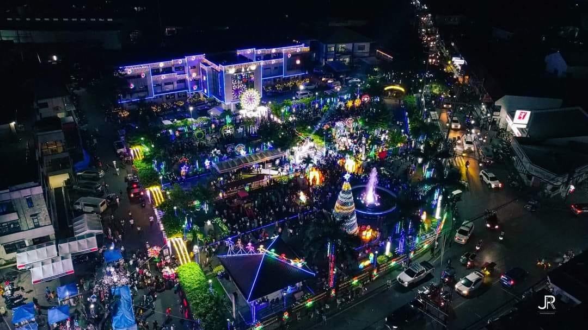

welcome to Sta. Maria, Bulacan! We're thrilled to have you join us on this exciting journey through the
flavors, aromas, and stories that make our town a gastronomic haven.
Sta. Maria, Bulacan, is a town in the Philippines known for its rich cultural heritage and vibrant
culinary scene. Nestled in the heart of Central Luzon, Sta. Maria boasts a diverse array of dishes that
reflect the fusion of traditional Filipino flavors with unique local influences. Let's delve deeper into
the culinary delights that make Sta. Maria a must-visit destination for food enthusiasts and explorers.
